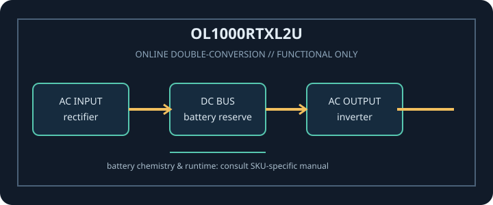

[ ONLINE DOUBLE-CONVERSION UPS // IDENTIFIED MODEL ]
Smart App Online OL1000RTXL2U
CyberPower OL1000RTXL2U: 1000 VA / 900 W online double-conversion UPS. This record covers only the identified SKU and regional configuration; match complete model code and nameplate to manufacturer documentation.

ARCHIVAL IDENTIFICATION: Record full SKU, region, serial/date code, firmware/revision, installed options, battery identifier and observed condition. Similar product names do not prove electrical compatibility.
Model specifications
| Exact model / topology | CyberPower OL1000RTXL2U; Online double-conversion (pure sine-wave output). |
|---|---|
| Rated output | 1000 VA / 900 W. VA and W limits are separate constraints; never exceed either. |
| Input / output voltage | Input: 120 V nominal, North American model. Output: Selectable 100 / 110 / 115 / 120 / 125 V AC per manufacturer settings. |
| Input connection | NEMA 5-15P input plug. |
| Output receptacles | 8 × NEMA 5-15R output receptacles. |
| Battery chemistry / service | Internal sealed lead-acid (VRLA) battery pack; use only the exact CyberPower-approved replacement assembly and service procedure. |
| Runtime | Refer to the model-specific CyberPower runtime chart at the cited product/manual sources. Runtime changes with load watts, battery age/condition, charge state, temperature and external battery modules; do not infer runtime from another OL-series SKU. |
| Transfer behavior | Online inverter continuously supplies the load during normal operation; there is no utility-to-inverter transfer delay. Bypass and fault/overload behavior are model/manual dependent. |
| Communications / compatibility | USB and serial host communications; optional compatible network management card and PowerPanel software. Check host OS, card and cable compatibility before deployment. |
| Compatibility / safety | 120 V North American input/output. Match source circuit, 5-15P input and 5-15R load plugs; do not exceed the 900 W limit. Do not connect high-inrush or non-IT loads unless explicitly allowed by CyberPower. Read the exact revision of the manufacturer manual before connection, service or battery replacement. |
Service and compatibility notes
- Measure and record connected watts and source voltage; runtime is not guaranteed for an aged or untested battery.
- Do not open energized mains equipment. Never defeat protective earth, overload an outlet, use damaged equipment, or substitute an unapproved battery.
- For hardwired or high-current versions, qualified installation, rated branch protection and local electrical code apply.
- Confirm the complete model suffix, input wiring, output voltage, outlet map and manual revision against the unit nameplate before connecting equipment.
Manufacturer datasheet and manual sources
- CyberPower OL1000RTXL2U manufacturer product specificationsOfficial model page for ratings, outputs, battery options and current downloads.
- CyberPower OL1000RTXL2U user manualModel-specific installation, safety, monitoring, maintenance and runtime information.